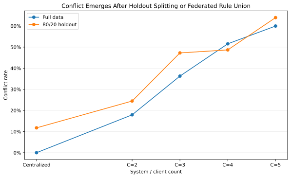
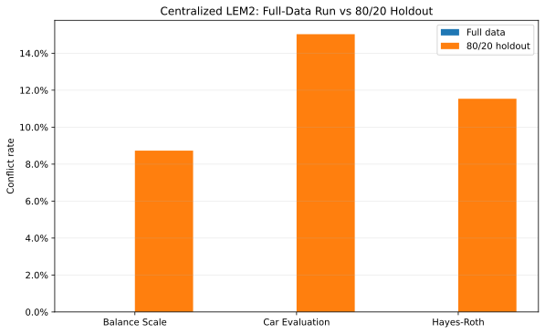
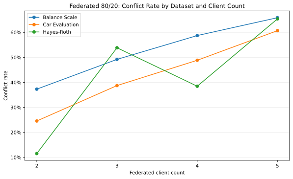
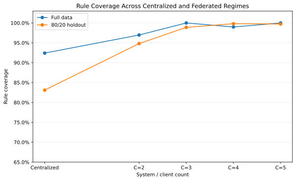
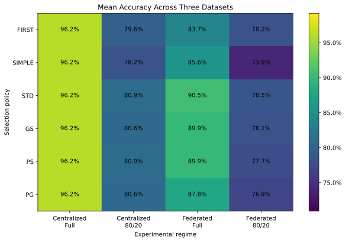
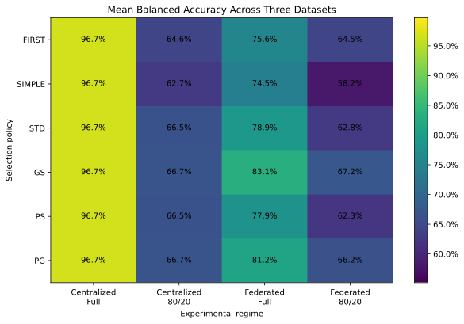
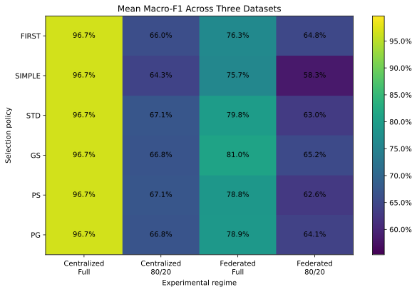
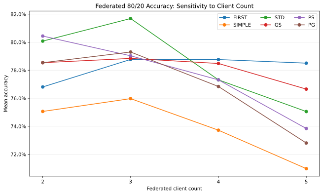
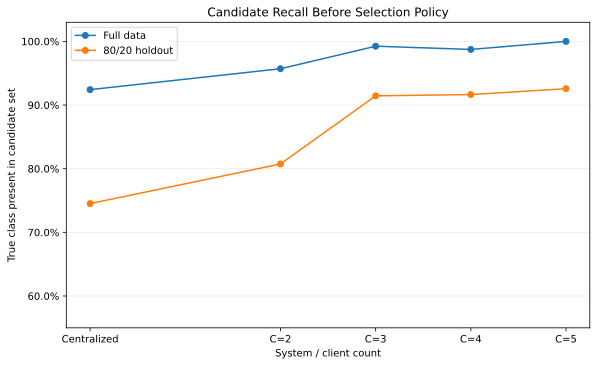

原始九張圖完整保留
依來源檔案讀取，不是 AI 重新繪製。若圖未載入，請檢查 GitHub Pages 是否將來源研究資料夾一起發布。
圖 01｜不同體制的 Rule Conflict

圖 02｜集中式各資料集的 Conflict

圖 03｜Federated／Holdout Conflict

圖 04｜不同體制的 Coverage

圖 05｜六策略 Accuracy 熱圖

圖 06｜六策略 Balanced Accuracy 熱圖

圖 07｜六策略 Macro-F1 熱圖

圖 08｜Federated Accuracy 對 Client 數

圖 09｜True-in-Candidate

怎麼把九張圖和 42 Seeds 結果一起報告？
第一步用舊圖解釋一個基準配置的現象；第二步回到研究報告確認該現象在 42 個 Seeds 下是否穩定；第三步去 8,820 筆證據區改變資料集、切分與 Client 數量；最後用 CSV 試算確認單筆規則如何形成決策。舊圖本身不能當作所有 Seeds 的統計結果。